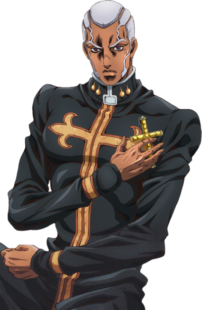

Backstory
Pucci was originally a priest serving at Green Dolphin Street Prison, where he developed a fascination with the Stand-using inmates and the power of Stands. He encountered DIO, the main antagonist of Part 3, during his time as a priest. DIO revealed his own Stand, The World, and imparted his vision of a perfect world to Pucci, influencing him deeply. Motivated by DIO's words and seeking to fulfill his vision, Pucci became obsessed with attaining "Heaven," a state of enlightenment and utopia. He believed that by attaining this state, he could reshape reality itself and create a world without suffering or sin.To achieve his goal, Pucci sought out the Stand arrow, a powerful artifact capable of granting Stands or enhancing existing ones. He discovered that by using the Stand arrow on himself during a specific cosmic event known as the "Green Baby" phenomenon, he could evolve his Stand, Whitesnake, into C-Moon, and later into the ultimate form, Made in Heaven. Throughout Stone Ocean, Pucci manipulates events and orchestrates encounters with the goal of achieving his version of "Heaven." He allies himself with various Stand users, including the protagonist Jolyne Cujoh's father, Jotaro Kujo, and his companions, ultimately betraying them in pursuit of his ambition.
At the end of Part 6, Pucci achieves his goal of attaining "Heaven" by activating Made in Heaven. This triggers the acceleration of time, resulting in the universe resetting to a new reality where Pucci's vision of a perfect world comes to fruition. However, Jolyne and her allies manage to confront Pucci in a final showdown. Despite their efforts, Pucci succeeds in resetting the universe, albeit at the cost of his own life, as he is ultimately

Abilities
Stand Abilities
Stand - Whitesnake
Stand Disc Extraction: Whitesnake can extract the Stand discs from individuals, effectively removing their Stands or granting them to others.
Memory Manipulation: Whitesnake has the ability to manipulate memories, allowing Pucci to alter or erase memories as he sees fit.
Illusion Creation: Whitesnake can create illusions, manipulating perception to deceive opponents or create distractions.
Stand - C-Moon
Gravity Manipulation: C-Moon's primary ability allows Pucci to control gravity, enabling him to manipulate the environment and attack opponents with gravitational force.
Enhanced Physical Abilities: Like all Stand users, Pucci gains enhanced physical abilities while using C-Moon, including increased strength, speed, and durability.
Stand - Made in Heaven
Time Acceleration: Made in Heaven's ultimate ability is to accelerate time to the point of achieving a new reality. This acceleration affects the entire universe, causing time to move faster and leading to the eventual creation of Pucci's ideal world, "Heaven."
Increased Speed and Perception: As time accelerates, Pucci gains heightened speed and perception, allowing him to outmaneuver opponents and predict their actions.
Reality Reset: By reaching the culmination of time acceleration, Pucci can reset the universe, creating a new reality where events unfold differently. This effectively erases the previous universe and allows for the realization of Pucci's vision of "Heaven."
Stand Intangibility: Made in Heaven grants Pucci and himself Stand intangibility during time acceleration, allowing them to pass through objects and attacks unharmed.